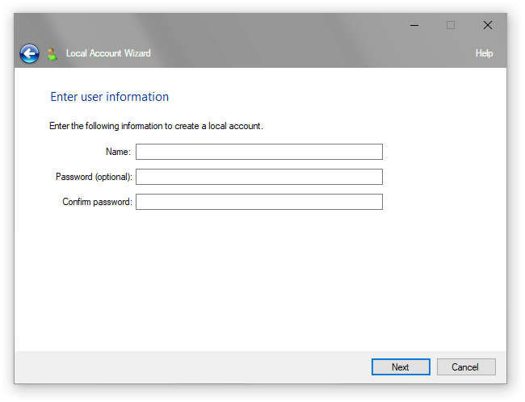
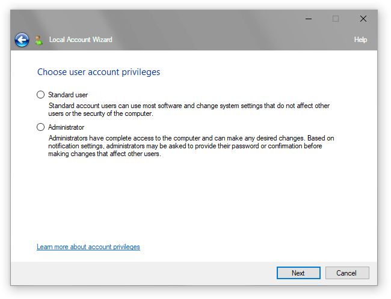

Microsoft continues to transform Windows into one giant piece of adware, forcing users to subscribe to every Windows component possible and to use Microsoft account even if they don't want to. As part of this efforts, Redmond-based company is increasingly agressively phases out the ability to create a local Windows account that is not bound to any Microsoft account. To counter these efforts, we present Local Account Wizard, or LAW - a program that helps you create local accounts without any obstacles.
Fast and simple
 The program works as a classic Windows 7 wizard, so every user could understand the process. Just type in the user name and, if you wish, a password. The wizard will check if the user name is available, and will proceed to the next steps. |
Different types
 Just like in standard Windows settings, you are offered two options for account type: administrator and a standard user. Standard users can only launch most programs and change some system settings while administrators have complete access to the system. |
Version 0.9.0. For Windows 11 and Windows 10. Requires User Account Control permission. Available under MIT License.